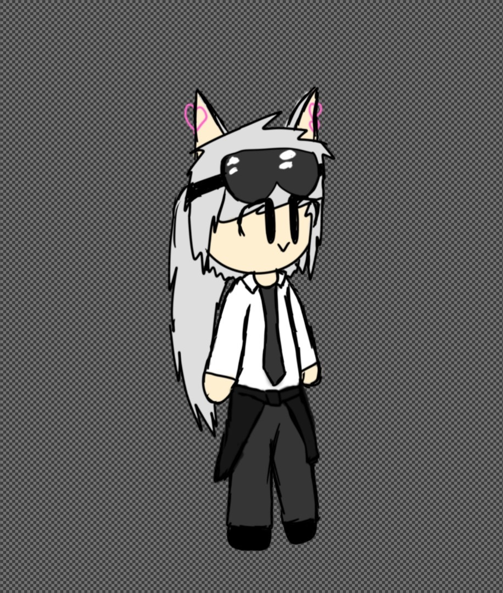

ชื่อ:นายวรัญชิต ถาวร อายุ16ปี เกิดวันที่ 26 มีนาคม พ.ศ. 2549
โรงเรียนช่วงมัธยมต้น:วัดป่าประดู่
โรงเรียน ณ ปัจจุบัน:วิทยาลัยเทคนิคระยอง
สิ่งที่ทำเป็นประจำช่วงเวลาว่าง:เล่นเกมออนไลน์
| หัวข้อ | สิ่งที่ชอบ | พอรับได้ | สิ่งที่ไม่ชอบ |
|---|---|---|---|
| อาหาร | ข้าวผัด,ข้าวหมูแดง,มาม่า | ต้มจืด,ข้าวที่มีรสของเผ็ด | ข้าวที่มีรสของเผ็ดเล็กน้อยไม่เผ็ดมาก |
| วิชา | ศิลปะ,เทสโนโลยีสารสนเทศ | วิทย์,คณิต,จีน,อังกฤษ ฯลฯ | พละ |
| สัตว์เลื้ยง | สนัข,แมว,ปลา | - | - |
| เพื่อน | นิสัยดี ไม่เกเร | ชอบแกล้งด้วยความรุนแรง | นิสัยดี เกเรเล็กน้อย |


ถาพที่วาดล่าสุด
